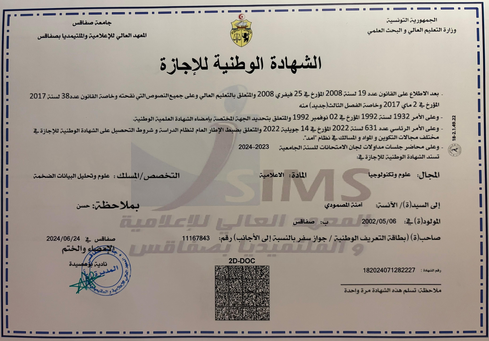
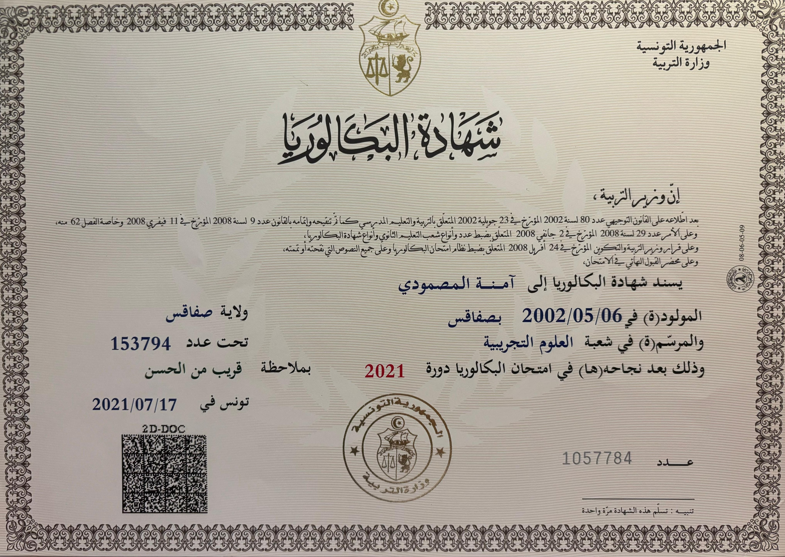
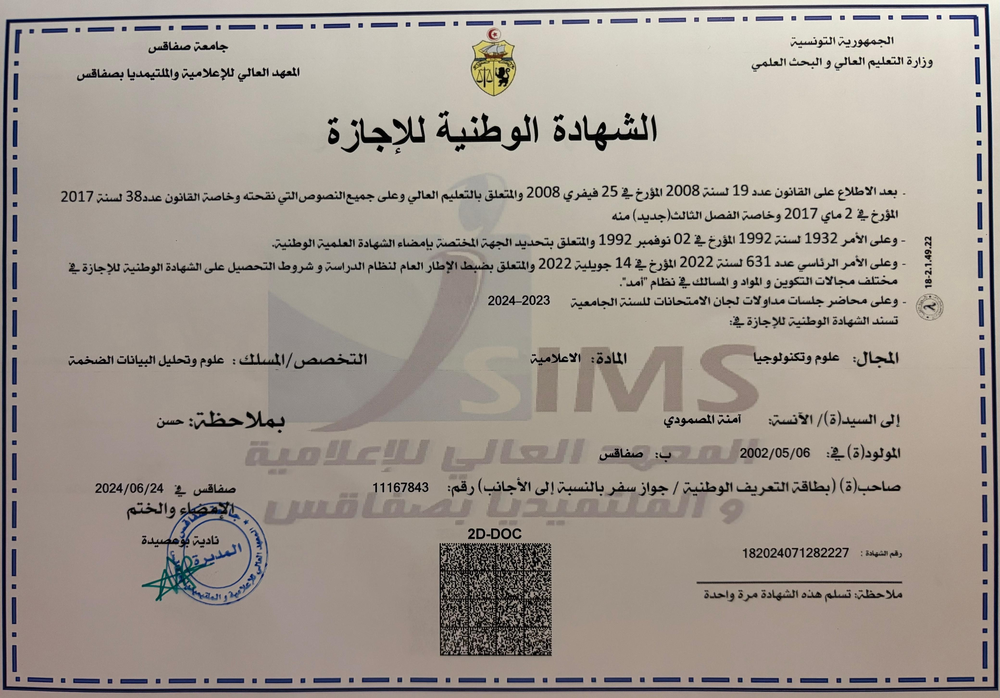
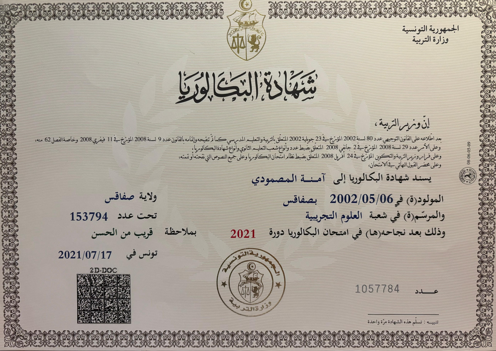

Mes Diplômes
2023 Licence en Sciences Informatiques, spécialité Big Data, Institut Supérieur d'Informatique et Multimédia de Sfax
2020 – 2021 Bac en science expérimentale ,Lycée Tayeb Mhiri Sfax
2023 Licence en Sciences Informatiques, spécialité Big Data, Institut Supérieur d'Informatique et Multimédia de Sfax
2020 – 2021 Bac en science expérimentale ,Lycée Tayeb Mhiri Sfax
